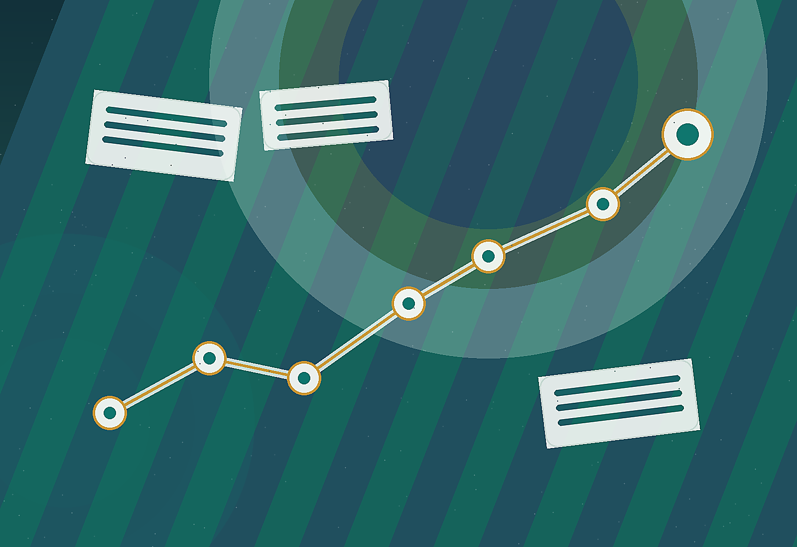

不知道從哪裡開始
缺少清楚的第一步，行動就會一直卡住。目標不是先變大，而是先變小。

學習完成度
完成診斷、SMART、飛輪、圈子盤點與作業後，可以匯出自己的行動稿。
一、完成目標最大的剋星
課程一開始先拆掉「我不適合」的誤會。真正要處理的不是能力，而是拖延背後的恐懼、期待落差與行動卡點。
今天選擇逃避問題，明天往往會變成更棘手的問題。
缺少清楚的第一步，行動就會一直卡住。目標不是先變大，而是先變小。
太在意別人的眼光，會讓腦內劇場先把行動擋下來。
擔心全力以赴仍沒有結果，所以乾脆不開始。
不是不會開口，而是不敢跨出第一通電話或第一個接觸。
選出你現在最容易卡住的原因，系統會給你一個最小行動。
二、成功者的致勝思維
講師用綜藝節目借場地、找贊助、發名片累積名單的經驗提醒：多數突破不是因為一開始就會，而是被迫開始後才長出方法。
一般人的慣性
成功者的練法
三、信心的真相
課程反覆提醒：不要苛責自己，要在每個環節裡找到能肯定自己的地方。早到、穿整齊、多聊三個人、敢開口，都是可以累積信心的素材。
高分不是結束，真正的成長來自回頭看錯在哪裡、下一次怎麼記住。
人需要看見自己正在改變。小小的成就感，會推動下一次行動。
客戶說不要，不等於你不好。把拒絕從人格否定，改成工作回饋。
把想法寫成清楚任務。
用數字或頻率看進度。
拆成今天能做的動作。
連回你的真正動機。
讓行動有檢核時間。
四、SMART 目標黃金法則
講義用「年底正選名單 40 人」示範：新增 13 位、每月至少聘 2 人、每週打 518 並約 2 位面試者，最後給出期限。
五、飛輪效應
無論是銷售、招募、運動或開發，一開始都會最累。重點不是立刻看到大成果，而是讓自己連續做，做到行動變成習慣。
別高估一天的力量，更別低估一年的改變。
先選一個動作，連續做 21 天。不是為了證明你很強，而是讓身體知道你真的開始了。
六、你的圈子，決定你的上限
你最常接觸的 5 個人，會塑造思維格局、推動未來走向，也會定義收入天花板。遇到問題時，要找能讓你升級的人，而不是一起抱怨的人。
七、文化才是組織真正的底氣
講義後段把目標設定拉回組織文化：守時、誠信、專業形象、向上解決問題、彼此成就，都是讓個人目標有環境支撐的底盤。
教案作業
這是課程最後的核心練習：目前完成幾％？剩下要怎麼拆？每天或每週要做什麼？